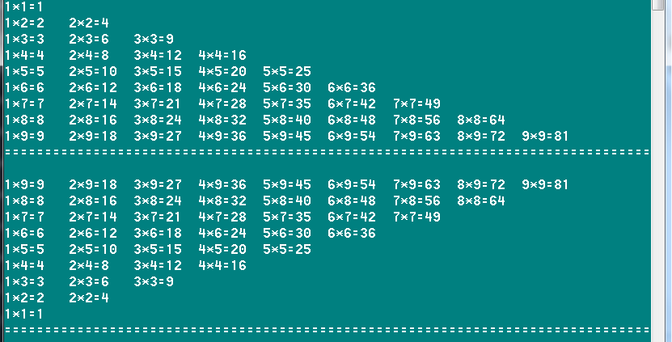
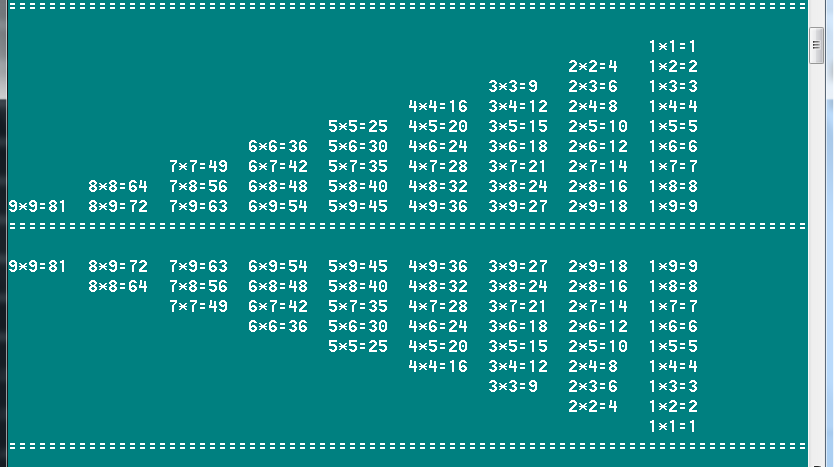

Introduction
简介
Python基础
1.1 Python安装和使用
1.2 Python基础语法
1.3 Python运算符
1.4 Python数据类型
1.5 Python分支结构
1.6 Python循环结构
1.7 Python函数
1.8 Python数据类型的操作
1.8.1 Number数字
1.8.2 String字符串
1.8.3 List列表
1.8.4 Tuple元组
1.8.5 Sets集合
1.8.6 Dictionary字典
1.9 Python文件操作
1.10 综合案例实战
本周作业
Python基础
1.11 Python面向对象编程
1.12 Python中的异常处理
1.13 魔术方法、属性和迭代器
1.14 Python模块实战
1.15 MySQL数据库基础
1.16 Python的数据库支持
1.17 图形用户界面实战
Published with GitBook
本周作业
1.11 本周作业
１. 使用while和for...in 实现下面的九九乘法表的效果输出


2. 参考1.10的综合案例中的学生信息管理，来实现一个自动取款机的存取款模拟效果。
3. 使用文件和目录操作，定义一个递归统计目录大小的函数。
results matching "
"
No results matching "
"